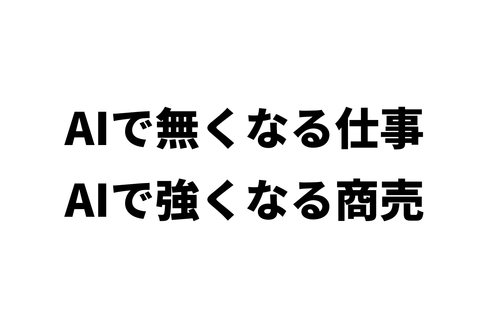

フリーランスになった人の多くは、会社を辞めたくて辞めた人だと思います。
だから、いま会社に戻っている人も、戻りたくて戻るわけじゃない。
仕方なく、戻る。
いま、こんなニュースが流れています。
https://x.com/nikkei/status/2094742205231485029
ぼくが敬愛するイケハヤさんも、「もうおすすめしない」とされています。
https://x.com/IHayato/status/2104374807693570542
会社員の人の中には、それでも脱サラしたいと思っている人がいるはずです。
そういう人に、ぼくから1つの方法を出します。
レンタルスペースです。
AIに代わりがきかない商売で、しかも、AIが進むほど強くなります。
AIが、フリーランスの仕事を削っている
この流れは、数字にも出ています。
クラウドソーシング大手のランサーズが、2026年5月の決算資料に出した図です。

いちばん右の列が「縮小している領域」。
理由は「AI内製化・自動化により需要が縮小」と書かれています。
単純な記事作成・データ入力。
テンプレート的なライティング。
定型バナー・素材作成。
翻訳・通訳サービス。
フリーランスの入口だった仕事が、ほぼそのまま入っています。
もう1社、クラウドワークスの決算資料も見てみます。
仕事を頼みたい会社と、受けたい人をつなぐ「プラットフォーム領域」の数字です。

3か月ごとの売上高は、4億9,900万円から3億9,300万円へ。
1年半で、約2割減りました。
本業のもうけ(セグメント営業利益)は、1億800万円から300万円。
ほぼゼロです。
同じ資料で、クラウドワークス自身が「AI影響を受けているプラットフォーム事業」と書いています。
さらに、その前の決算資料には、こんな図がありました。

左は、仕事のカテゴリーごとに「AIに代わられるかもしれない割合」です。
悪いほうに転んだときの見込みですが、事務、翻訳・通訳、リサーチは57%。
右には「オンサイト正社員回帰により成長率が鈍化」。
仕事を仲介する会社自身が、フリーランスから会社員に戻る流れを、決算資料に書いているんです。
20代のフリーランスで、正社員に転じた人は18.4%。
逆に、正社員からフリーランスになった人は1.5%(YOUTRUSTの調査・2026年6月)。
パソコンの中で完結する仕事ほど、AIが代わりにやれるようになりました。
その仕事で独立していた人ほど、波をまともにかぶっています。
ぼくも、会社を辞めたかった
ぼくは大学を出てから、製薬会社でサラリーマンをしていました。
協調性があまりなくて、人前で話すのも苦手。
60歳までこれを続けるのは、イヤだなと思っていました。
だから、辞めたくて会社を出た人の気持ちは、よく分かります。
そして、仕方なく戻るときのくやしさも、想像がつきます。
でも、戻ることは、終わりではありません。
給料を土台にして、もう一度、脱サラを目指せばいい。
ぼくも、会社員のまま準備して、辞めました。
問題は、何で準備するかです。
AIに削られる仕事で準備しても、また同じ波をかぶります。
レンスペは、AIに代わりがきかない
レンタルスペースは、部屋を時間で貸す商売です。
ダンスの練習をしたい人。
会議をしたい人。
誕生日会をしたい人。
その人たちが、ポータルサイトから部屋を探して、予約して、実際にやってきます。
部屋で踊るのも、集まるのも、人間です。
AIが代わりに来ることはありません。
物件を借りる。
内装をする。
鏡をつける。
鍵を渡す。
ぜんぶ、パソコンの外の話です。
AIがどれだけかしこくなっても、駅から3分の部屋は作れません。
しかも、AIが進むほど強くなる

ここが、いちばん言いたいところです。
レンスペは「AIに負けない」だけではありません。
AIが進むほど、強くなります。
理由は2つです。
① ライバルが増えにくい
AIで簡単になった副業には、人がどっと流れ込みます。
だれでもできるようになったら、ライバルが増えて、利益がうすくなる。
フリーランスの仕事で起きたのが、まさにこれです。
レンスペは、ちがいます。
物件探し、内見、大家さんとの交渉、内装。
ここは、AIが代わりにやってくれません。
だから、入ってくる人が増えにくい。
AIで簡単になる商売が増えるほど、簡単にならない商売の価値が上がります。
② 運営は、AIでどんどん楽になる
一方で、運営の仕事は、ほとんどが文章と数字です。
予約の確認。
お客さんへの返信。
売上の集計。
競合の調査。
ぜんぶ、AIの得意なことです。
ぼくの店では、電話の問い合わせも、AIの自動応答に任せはじめました。
入口は固いまま、運営だけが楽になる。
AIが進むほど、この差は広がっていきます。
会社員のまま、1部屋から
37歳のとき、ぼくはアットホームで近所の物件を見つけて、問い合わせボタンを押しました。
それが1号店のダンススタジオです。
初期費用は90万円。
融資はゼロ、貯金だけです。
7ヶ月で回収して、5年たったいまも、毎月15万円ほど残っています。
やることは、1店舗あたり1日数分。
清掃は週1回、1回1,000〜1,500円で外注しています。
会社にいるあいだも、部屋は予約を受けてくれます。
会社員のまま部屋を増やして、給料を超えたところで、40歳で会社を辞めました。
5年で23店舗、売上は累計1.5億円ほどになりました。
もう1本の柱は、eBay
じつは、ぼくはもう1つ、eBay輸出もやっています。
eBayは、レンスペと反対です。
AIを敵ではなく、味方にできる商売です。
うちのeBay店は、梱包発送のほかは、ほぼぜんぶAIでやっています。
レンスペは、AIに負けない土台。
eBayは、AIを使って伸ばす柱。
たとえば、レンスペ2部屋で月20万円。
eBayで月30万円。
あわせて月50万円、年収にすると600万円くらいです。
ここまで来ると、脱サラが現実に見えてきます。
戻っても、あきらめなくていい
フリーランスから会社に戻る。
それは、脱サラの失敗ではありません。
やり直しの、スタート地点です。
給料で暮らす。
部屋で積み上げる。
AIに負けない収入を、会社の外に1本つくる。
あなたが会社を辞めたかった理由は、いまもまだ残っていますか?
▶ 融資ゼロ・90万円の不動産副業、7ヶ月で回収しました
https://rental-space.net/articles/2026-09-16-real-estate-side-business-no-loan.html
▶ 40歳オッサン at homeの問い合わせで脱サラできた
https://rental-space.net/articles/2026-09-21-rental-space-inquiry-quit-job.html
▶ eBayと○○は、最強の組み合わせ
https://rental-space.net/articles/2026-09-27-ebay-rental-space-best-combo.html
▼もう1つの副業、AI社員だけのeBay輸出店の実録🐹
https://note.com/cham_ebay
▼ブログ(レンスペ×eBay、全記事まとめ)
https://rental-space.net
物件探しから、月いくら残るかの計算、出店、撤退まで。23店舗の数字といっしょに、教科書にぜんぶ書いています。
レンタルスペース経営の教科書
https://rental-space.net/kyokasho/
販売価格は3部売れるごとに2,000円ずつ値上がりします（上限あり）。内容・最新価格は販売ページをご確認ください。